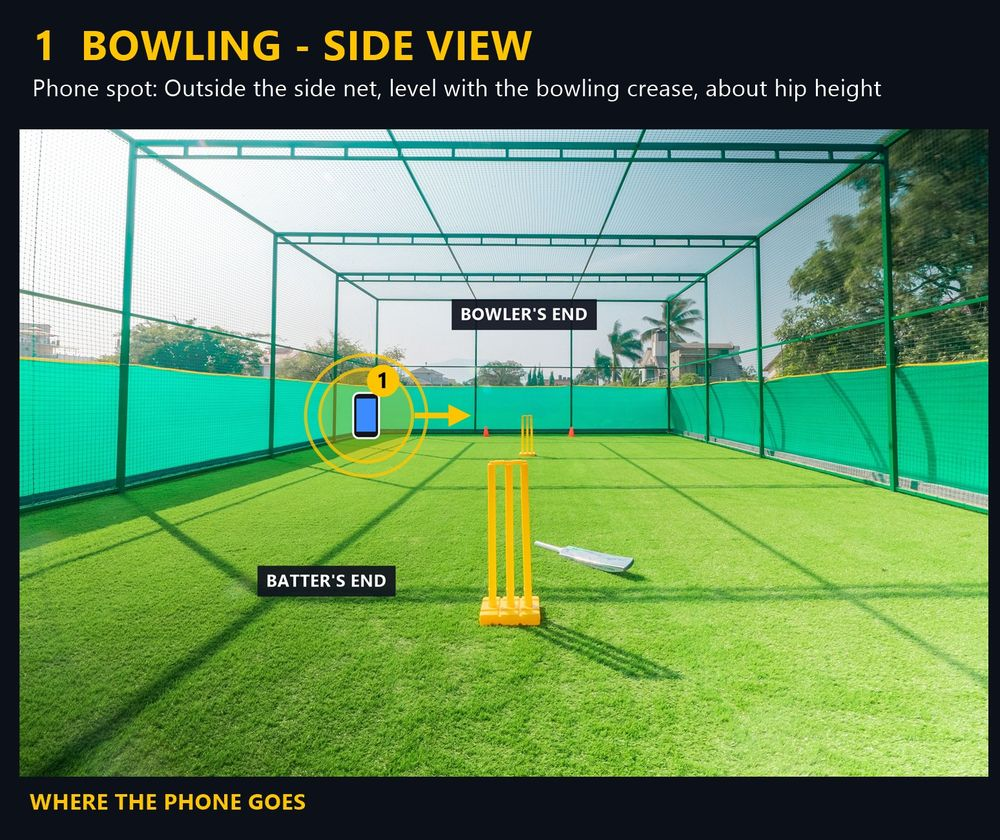
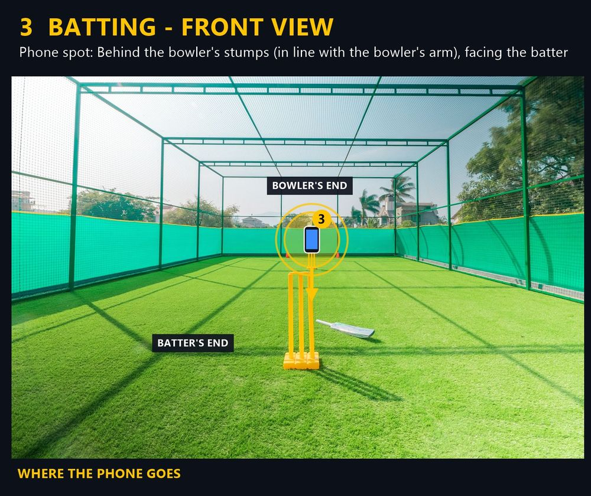
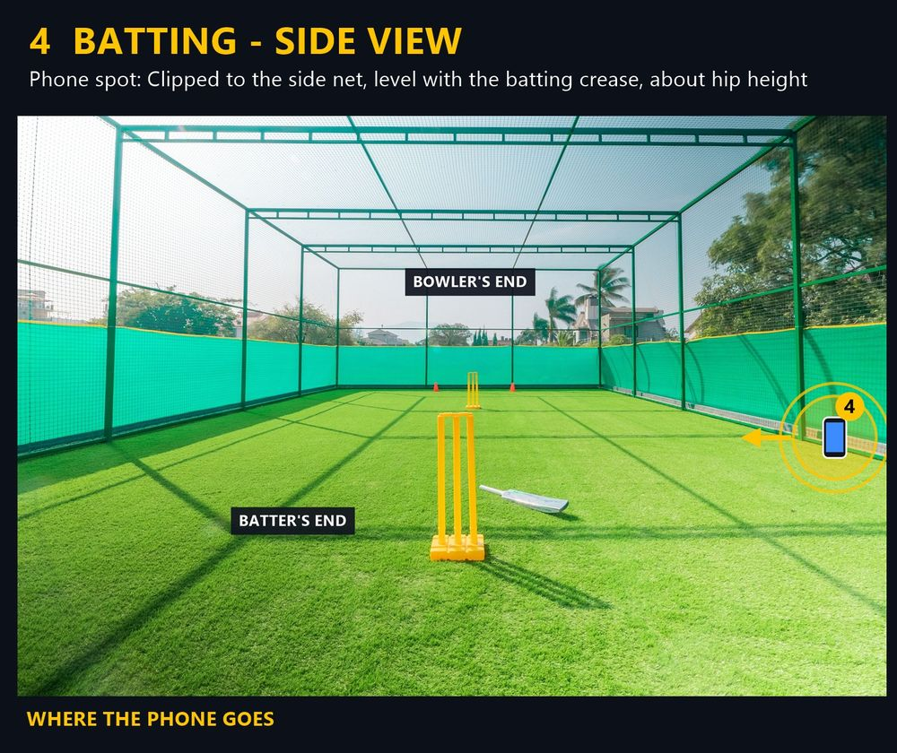

My phone keeps slipping off the net. What helps?
Use a small clamp or a flexible tripod wrapped round a net pole or fence post. Check it's tight before you start, and stop to re-check if the net gets hit.
My video looks dark or blurry.
Wipe the lens first. Film with the light behind the phone, not shining into it. Indoors, pick a spot under a light and away from bright windows.
Which guide card should I use?
Bowling: card 1 (side) or card 2 (front). Batting: card 3 (front) or card 4 (side). Side views show your body shape; front views show your line. Try both.
Will the ball hit my phone?
Only put the phone where the guide card shows, outside or behind the net. Never put it inside the net or on the pitch.
My phone says storage is full.
Crease Cam saves clips to your phone, so delete clips you no longer need from your camera roll, then film again.
The 4 guide cards



